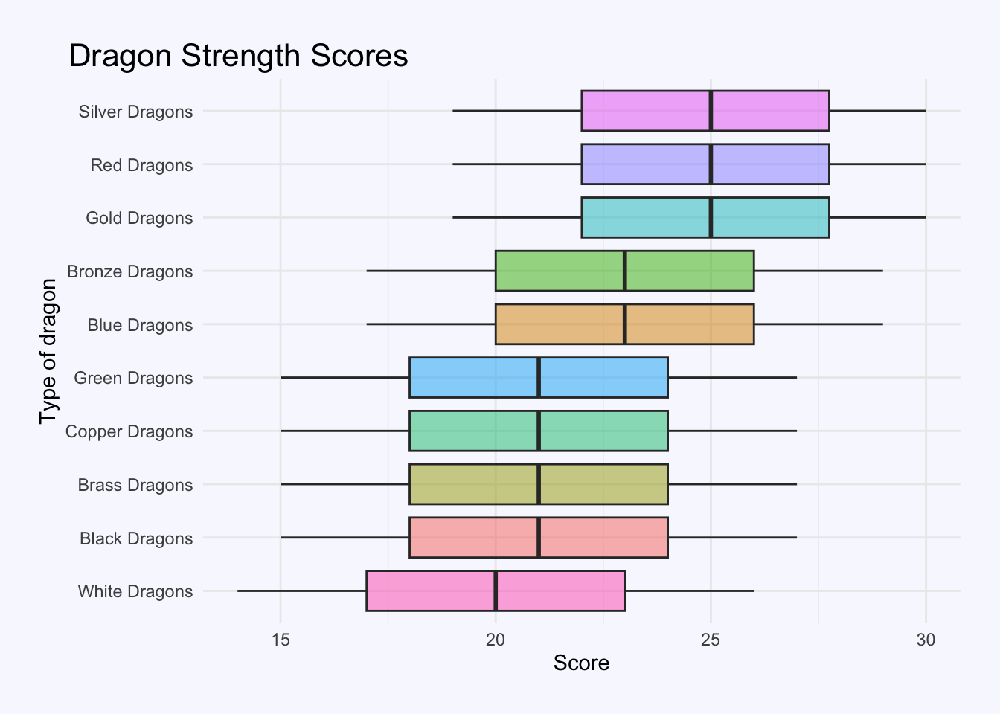
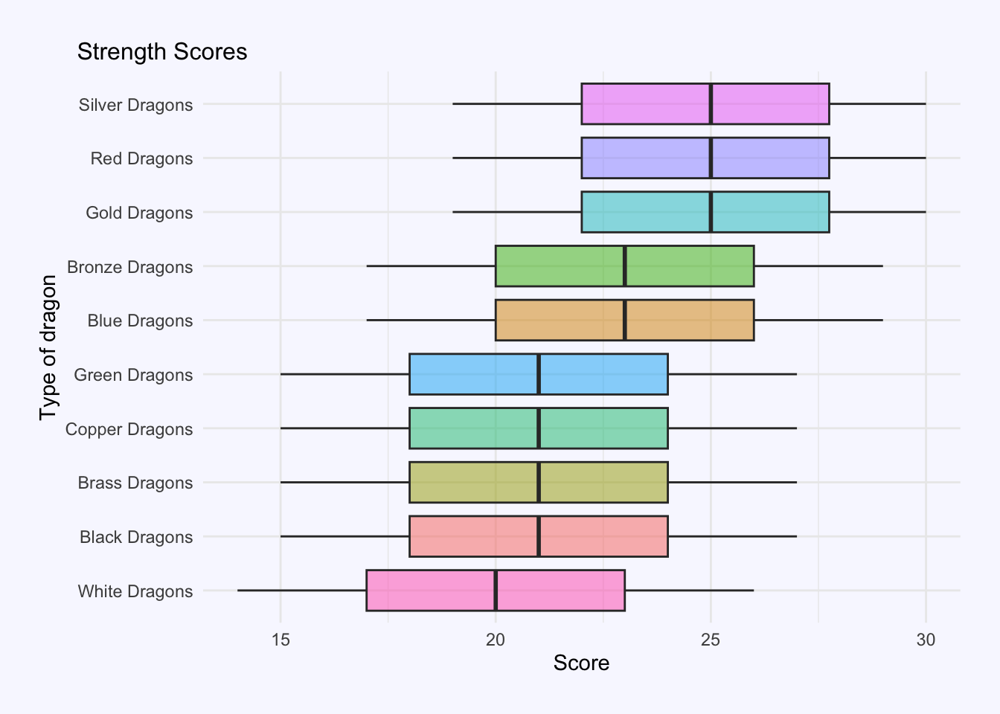
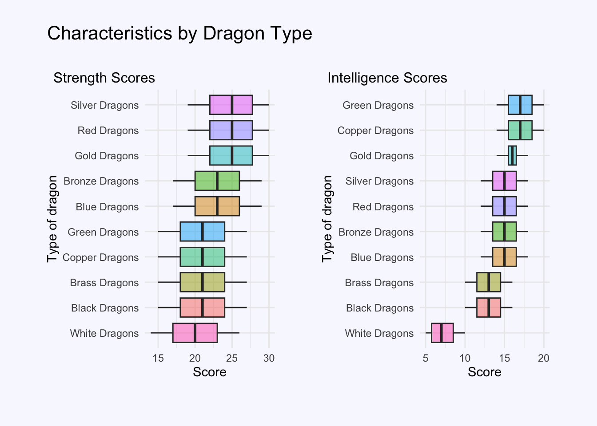
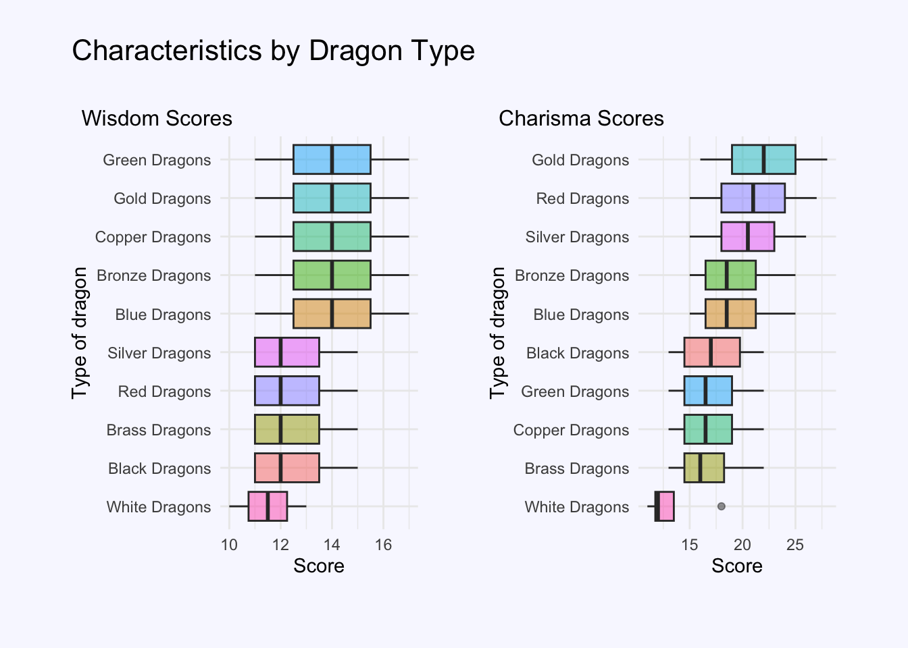
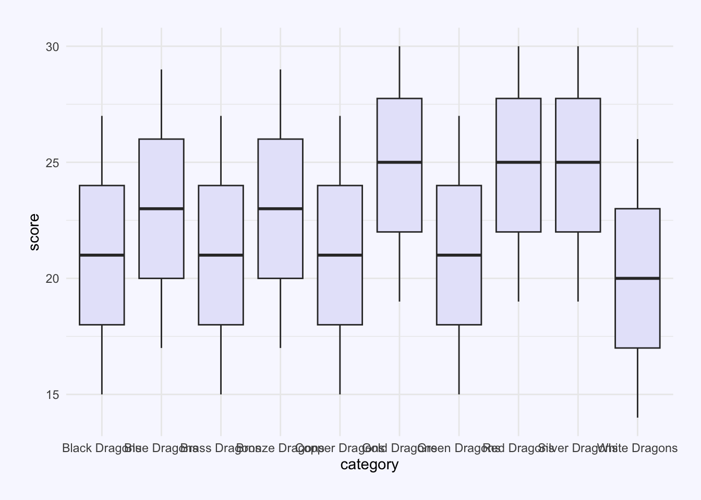
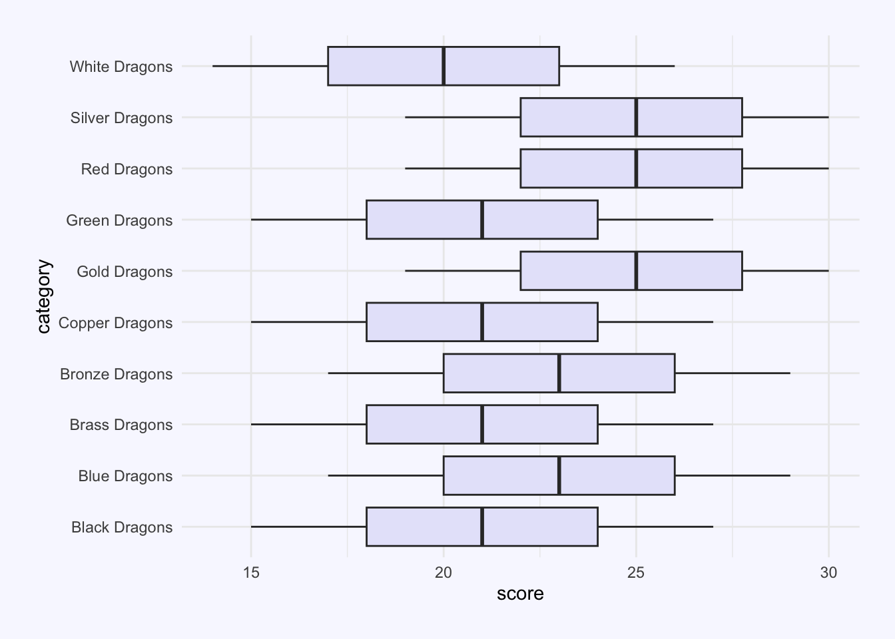
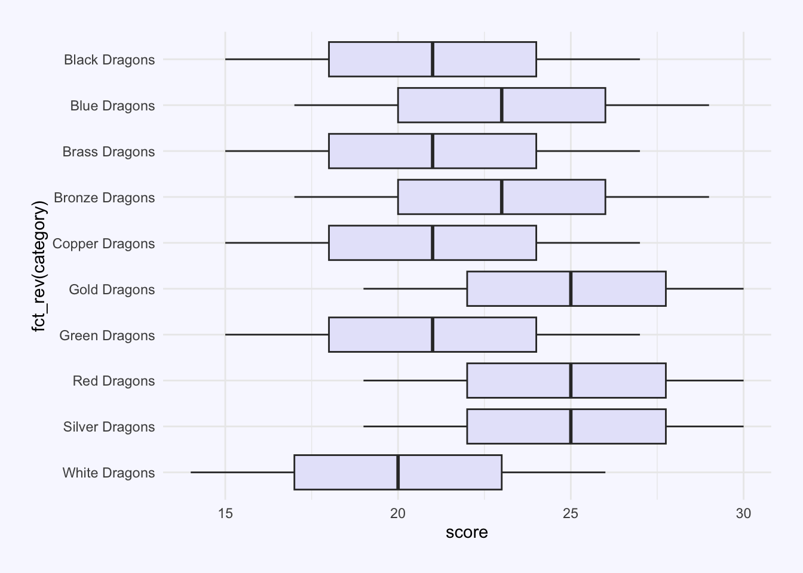
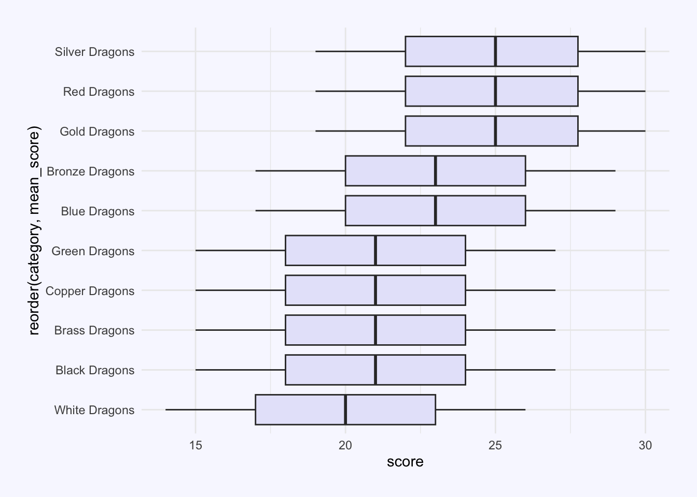

library(tidyverse)
library(tidytuesdayR)
library(janitor)
library(ggeasy)
library(patchwork)
library(Hmisc) # for %nin%
# adjust year/week values here
year = 2025
week = 21dungeons and dragons monsters
Tidy Tuesday Week 21
This week for TidyTuesday I decided to look at dragons and practice writing a ggplot function that makes it easy to create the same plot for each level of a variable. In this case, I wanted a function that would spit me out a boxplot comparing the different dragon types on each of the key measures (strength, intelligence, wisdom, charisma, dexerity, and constitution).
load packages
get the data
tt <- tt_load(year, week)---- Compiling #TidyTuesday Information for 2025-05-27 ----
--- There is 1 file available ---
── Downloading files ───────────────────────────────────────────────────────────
1 of 1: "monsters.csv"df <- tt[[1]]
head(df)# A tibble: 6 × 33
name category cr size type descriptive_tags alignment ac initiative
<chr> <chr> <dbl> <chr> <chr> <chr> <chr> <dbl> <dbl>
1 Aboleth Aboleth 10 Large Aber… <NA> Lawful E… 17 7
2 Air El… Air Ele… 5 Large Elem… <NA> Neutral 15 5
3 Animat… Animate… 1 Medi… Cons… <NA> Unaligned 18 2
4 Animat… Animate… 0.25 Small Cons… <NA> Unaligned 17 4
5 Animat… Animate… 2 Large Cons… <NA> Unaligned 12 4
6 Ankheg Ankheg 2 Large Mons… <NA> Unaligned 14 0
# ℹ 24 more variables: hp <chr>, hp_number <dbl>, speed <chr>,
# speed_base_number <dbl>, str <dbl>, dex <dbl>, con <dbl>, int <dbl>,
# wis <dbl>, cha <dbl>, str_save <dbl>, dex_save <dbl>, con_save <dbl>,
# int_save <dbl>, wis_save <dbl>, cha_save <dbl>, skills <chr>,
# resistances <chr>, vulnerabilities <chr>, immunities <chr>, gear <chr>,
# senses <chr>, languages <chr>, full_text <chr>make a plot theme
# plot theme
theme_dragons <- function() {
theme_minimal() %+replace%
theme(
plot.title = element_text(size = 16, hjust = 0.05,
colour = "black",
margin = margin(b = 5)),
plot.subtitle = element_text(size = 12, hjust = 0.05,
colour = "black",
margin = margin(b = 5)),
plot.title.position = "plot", # Position at the "plot" level rather than "panel"
panel.background = element_rect(fill = "ghostwhite", color = NA),
plot.background = element_rect(fill = "ghostwhite", color = NA),
plot.margin = margin(t = 20, r = 20, b = 20, l = 20, unit = "pt")
)
}# set the custom theme to apply to all plots in this document
theme_set(theme_dragons())wrangling
Here I am deciding to look at dragons. I need to filter out dragon types that only have a single row in the data. I am making the data long and adding a new column that is the mean_score on each of the variables for each dragon type (to allow for ordering later on).
df %>%
tabyl(type) %>%
arrange(-n) %>%
head() type n percent
Beast 84 0.25454545
Dragon 45 0.13636364
Monstrosity 37 0.11212121
Fiend 29 0.08787879
Humanoid 26 0.07878788
Undead 18 0.05454545dragons <- df %>%
filter(type == "Dragon") %>%
select(name, category, type, str:cha)
dragons %>%
tabyl(category) %>%
arrange(n) %>%
head() category n percent
Dragon Turtle 1 0.02222222
Half-Dragon 1 0.02222222
Kobold 1 0.02222222
Pseudodragon 1 0.02222222
Wyvern 1 0.02222222
Black Dragons 4 0.08888889single_dragons <- c("Dragon Turtle", "Half-Dragon", "Kobold", "Pseudodragon", "Wyvern")
dragons_long <- dragons %>%
filter(category %nin% single_dragons) %>%
pivot_longer(names_to = "index", values_to = "score", str:cha) %>%
mutate(measure = case_when(index == "str" ~ "Strength",
index == "dex" ~ "Dexterity",
index == "con" ~ "Constitution",
index == "int" ~ "Intelligence",
index == "wis" ~ "Wisdom",
index == "cha" ~ "Charisma",
))
dragons_long <- dragons_long %>%
group_by(category, index) %>%
mutate(mean_score = mean(score))make a plot
I make a basic plot using just the strength scores and work out how to order the boxplots by mean strength scores (see what i learned below for alternative options I played with).
dragons_long %>%
filter(index == "str") %>%
ggplot(aes(x = reorder(category, mean_score), y = score, fill = category)) +
geom_boxplot(alpha = 0.5) +
coord_flip() +
labs(
x = "Type of dragon",
y = "Score",
title = "Dragon Strength Scores"
) +
easy_remove_legend()
write a function
Now to turn that code into a function. Here my function takes a dataframe and a value of the variable we are interested in (in this case index). It filters the data for that value, pulls out the value of measure (to use as a subtitle label), then plots the filtered data.
plot_dragon_index <- function(data, var) {
filtered_data <- data %>%
filter(index == var)
measure <- filtered_data$measure[1]
filtered_data %>%
ggplot(aes(x = reorder(category, mean_score), y = score, fill = category)) +
geom_boxplot(alpha = 0.5) +
coord_flip() +
labs(
x = "Type of dragon",
y = "Score",
subtitle = paste(measure, "Scores")
) +
easy_remove_legend()
}test the function
plot_dragon_index(dragons_long, "str")
combine plots
plot_dragon_index(dragons_long, "str") + plot_dragon_index(dragons_long, "int") +
plot_annotation(
title = "Characteristics by Dragon Type",
theme = theme(
plot.title = element_text(
hjust = 0, # align left
size = 16,
color = "black",
margin = margin(b = 5)) # spacing below title
)
)
plot_dragon_index(dragons_long, "wis") + plot_dragon_index(dragons_long, "cha") +
plot_annotation(
title = "Characteristics by Dragon Type",
theme = theme(
plot.title = element_text(
hjust = 0, # align left
size = 16,
color = "black",
margin = margin(b = 5)) # spacing below title
)
)
three things I learned…
1. theme_set()
You can make a custom ggplot theme and then automatically use it for all the plots in your Quarto Document using theme_set(). In this case, I called my theme theme_dragons()
theme_set(theme_dragons())2. plot_annotation
When using the patchwork package to combine plots you can use plot_annotation() to add titles etc to your combined plot. You can also use theme() functions, in much the same way you would for ggplot to control your title, margins or background. See patchwork vignette.
plot1 + plot2 +
plot_annotation(title = "My title",
theme =
theme(plot.background = element_rect(fill = "ghostwhite"),
plot.margin = margin(20, 20, 20, 20), # T, R, B, L
plot.title = element_text(hjust = 0, # align left
size = 16, color = "black",
margin = margin(b = 5)) # spacing below title
)
)3. how to reorder x axis in ggplot
coorid_flip() is handy when you want x axis labels to display more clearly, but it is a bit aanoying that the order L-R gets translated B-T. I played for a little bit working out how to use fct_rev() to make the dragons display in alphabetical order from top to bottom, before deciding that ordering the bars by the mean_score would make for a more meaningful plot. Here is the code for each of those options in a panel-tabset.
dragons_long %>%
filter(index == "str") %>%
ggplot(aes(x = category, y = score)) +
geom_boxplot(fill = "lavender") 
dragons_long %>%
filter(index == "str") %>%
ggplot(aes(x = category, y = score)) +
geom_boxplot(fill = "lavender") +
coord_flip() 
dragons_long %>%
filter(index == "str") %>%
ggplot(aes(x = fct_rev(category), y = score)) +
geom_boxplot(fill = "lavender") +
coord_flip() 
dragons_long %>%
filter(index == "str") %>%
ggplot(aes(x = reorder(category,mean_score), y = score)) +
geom_boxplot(fill = "lavender") +
coord_flip() 